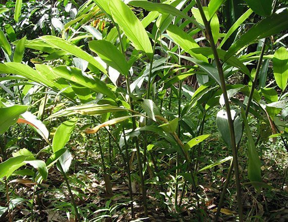
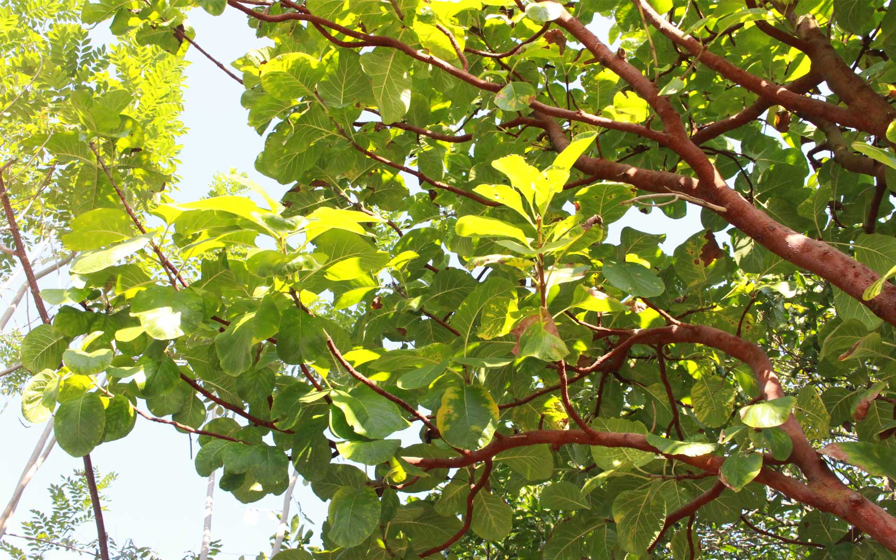

1.ถั่วดินโคก
2.เทพทาโร
3.มะตูมนิ่ม
4.มะหาด


ไม้พุ่มขนาดเล็ก สูง 15-30 เซนติเมตร ลำต้นสั้นมาก ใบประกอบแบบขนนก เรียงสลับ
เป็นไม้ต้นขนาดกลางถึงขนาดใหญ่ สูง 10-20 เมตร เรือนยอดเป็นพุ่มกลมทึบ สีเขียวเข้ม
เป็นไม้ยืนต้นสูง 10-15 เมตร ใบเดี่ยว ออกเรียงสลับ รูปรี หรือรูปใบหอกปลายแหลม โคนมน ขอบหยัก ใบมีกลิ่นหอม
ไม้ต้น ขนาดกลางถึงใหญ่ สูงประมาณ 15 - 20 เมตร เปลือกนอกของลำต้นมีสีเทาแกมน้ำตาล หรือน้ำตาลดำ แตกเป็นสะเก็ดเล็ก
5.เร่ว
6.หัวร้อยรู
7.กระทุ่มนา
8.ขันทองพยาบาท

ผลเรียวยาวหรือขอบขนานแกมสามเหลี่ยม ขนาดเส้นผ่านศูนย์กลาง 2 ซม. มีขนอ่อนสีน้ำตาลแดงปกคลุม
ต้นแก่มีหัวกลมโตขนาดเท่าลูกมะพร้าวห้าว ภายในหัวเป็นรูย้อนขึ้น ย้อนลง พรุนไปทั่ว
เป็นทรงพุ่มกลม มีความสูงได้ประมาณ 8-15 เมตร แตกกิ่งแขนงต่ำ ลำต้นคดหรือเปลาตรง เปลือกลำต้นด้านนอกเป็นสีเทา
ไม้ยืนต้นขนาดกลาง กิ่งก้านกลม เปลือกเกลี้ยง สีเทา ใบเดี่ยวแข็งหนาดกทึบ เป็นดอกเล็ก ๆ
9.จุกโรหินี
10.ชะเอมไทย
11.ชิงชี่
12.ตับเต่า


เป็นไม้ล้มลุกที่มีลำต้นเลื้อยทอดไปตามต้นไม้ เถากลมสีเขียว ตามข้อเถามีรากงอกออก
เป็นไม้เถาขนาดใหญ่ มีหนาม ใบประกอบแบบขนนกสองชั้น ใบเล็กละเอียดเป็นฝอย ดอกช่อออกตามปลายกิ่งลักษณะเป็นพู่
เป็นไม้พุ่มกึ่งไม้ยืนต้นขนาดเล็ก มีความสูงของต้นประมาณ 1-6 เมตร กิ่งก้านอ่อนเป็นสีเขียว กิ่งคดไปมา ผิวเรียบ
มีลักษณะทรงพุ่มโปร่งเป็นรูปกรวย เปลือกต้นเป็นสีน้ำตาลปนเทา เปลือกด้านในเป็นสีน้ำตาลอมแดง
13.นางแย้มฟ้า
14.ปลาไหลเผือก
15.พังคี
16.มะคังแดง



เป็นไม้พุ่มเล็ก สูงประมาณ 1-1.5 เมตร มีใบสีเขียวรูปหัวใจมีขอบหยักโดยรอบ
ไม้ต้นขนาดเล็ก ลำต้นตั้งตรง มีความสูงตั้งแต่ 1-10 เมตร เปลือกต้นเป็นสีน้ำตาล แตกกิ่งก้านน้อย
มีลักษณะค่อนข้างกลม มีขนาดประมาณ 1 เซนติเมตร มี 3 พู ผลมีขนขึ้นปกคลุมแน่น
กึ่งไม้พุ่ม ขนาดกลาง สูง 6-12 เมตร ใบดกหนาทึบ ลำต้นและกิ่งก้านสีน้ำตาลแดง
17.สะค้าน
18.สารภีป่า
19.อบเชยไทย
20.เฉียงพร้านางแอ


เถาแห้งสีน้ำตาล ทรงกระบอก ผิวขรุขระ มีข้อปล้อง เปลือกค่อนข้างอ่อน เนื้อสีเหลืองน้ำตาล มีรากฝอยติดอยู่ตามข้อ
เป็นไม้ยืนต้นไม่ผลัดใบขนาดเล็กถึงขนาดกลาง มีความสูง 10-20 เมตร ลำต้นมีลักษณะคดงอ แตกกิ่งต่ำ
เป็นใบเดี่ยว เรียงตรงข้าม มีสีเหลืองอ่อนหรือเขียวอ่อน กลีบรวมชั้นนอก 3 กลีบ กลีบรวมชั้นใน 3 กลีบ
เป็นไม้ยืนต้นขนาดกลาง ไม่ผลัดใบ สูง 25-30 เมตร ลำต้นเปลา ตั้งตรงเป็นทรงเรือนยอดทรงพุ่มรูปกรวยกว้างทึบ
21.เถาเอ็นอ่อน
22.เปราะหอม
เป็นไม้เถาเลื้อยพาดพันกับต้นไม้อื่น ปลือกเถาเรียบหนาเป็นสีน้ำตาลอมสีดำ มีลายประตลอดเถา
มีเหง้าสั้น ขนาดเล็ก เหง้าหลักทรงกลมผิวสีน้ำตาลอ่อน ที่ผิวมีรอยข้อปล้องชัดเจน